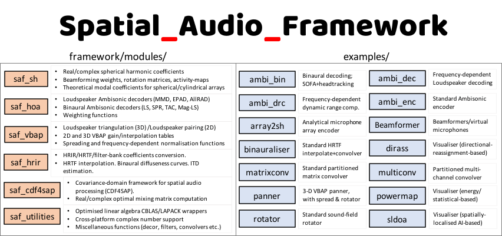

- git: https://github.com/leomccormack/Spatial_Audio_Framework
- doxygen: https://leomccormack.github.io/Spatial_Audio_Framework/
About
The Spatial_Audio_Framework (SAF) is an open-source and cross-platform framework for developing spatial audio related applications in C/C++. While originally intended as a resource for researchers in the field, the framework has gradually grown into a large and comprehensively-documented codebase comprising a number of distinct modules; with each module targeting a specific sub-field of spatial audio (e.g. Ambisonics encoding/decoding, spherical array processing, amplitude-panning, HRIR processing, room simulation, etc.). Several examples are also included in the repository, which serve to demonstrate the functionality of the framework and may also act as a starting point for new projects.
Owing to its modular design, expanding the framework is also relatively straightforward, and contributions from researchers and developers of spatial audio technologies is actively encouraged! :-)
Prerequisites
The framework utilises the following external libraries:
- Any library (or libraries) conforming to the CBLAS and LAPACK standards
- (Optional) netCDF for reading SOFA files
- (Optional) Intel's Integrated Performance Primitives (IPP) for the FFT.
In order to inform SAF which CBLAS/LAPACK supporting library/libraries you have linked to your project, simply add one of the following global pre-processor definitions:
Detailed instructions regarding how to build and link these libraries can be found here.
Framework structure
The **framework** comprises the following core modules (ISC):
- saf_hoa - a collection of higher-order Ambisonics binaural and loudspeaker decoders.
- saf_sh - spherical harmonic and spherical array processing related functions.
- saf_vbap - Vector-base Amplitude Panning (VBAP) functions.
- saf_cdf4sap - Covariance Domain Framework for Spatial Audio Processing (CDF4SAP).
- saf_hrir - HRIR/HRTF related functions (estimating ITDs, HRTF interpolation, diffuse-field EQ etc.).
- saf_reverb - a collection of reverbs and room simulation algorithms.
- saf_utilities - a collection of useful utility functions and cross-platform wrappers.
The framework also includes the following optional modules:
- saf_sofa_reader - a simple SOFA file reader (ISC).
- saf_tracker - a particle-filtering based tracker (GPLv2).
To enable optional framework modules, simply add the relevant pre-processor definition:
Note that the saf_sofa_reader module also requires netCDF to be linked to your project. Instructions on how to install/link this dependency can be found here.
Additional options
The framework can be configured further, with the following options:
Using the framework
Once a CBLAS/LAPACK flag is defined (and the correct libraries are linked to your project), add the files found in the framework folder to your project and add the following directory to your project's header search paths:
The framework's master include header is then:
Building with CMake
The framework may also be included within an existing CMake workflow with simply:
The available SAF-related build options (and their default values) are:
If using SAF_USE_INTEL_MKL as the performance library, note that the default header and library search paths may be overridden with:
If the saf_sofa_reader module is enabled, CMake will use the statically built dependencies found in the dependencies folder for MacOSX and MSVC users by default. Linux and MSYS2 users may instead install a shared netcdf library and inform CMake of its location via:
For Unix users: the framework, examples, and unit testing program may be built as follows:
Or for Visual Studio (e.g. 2017) users (using x64 Native Tools Command Prompt):
Documentation
Doxygen-based documentation is generated via a GitHub Action everytime a commit is pushed to the master branch. The documentation is hosted here.
Alternatively, you may generate the documentation yourself (e.g. for the other branches) with the following commands:
Examples
Several examples have also been included in the repository, which may serve as a starting point for learning how to use the framework:
- ambi_bin - a binaural Ambisonic decoder with built-in rotator. It supports the following decoding options: least-squares (LS), spatial re-sampling (SPR), Time-alignment (TA), Magnitude Least-Squares (MagLS).
- ambi_dec - a frequency-dependent Ambisonic decoder. It supports the following decoding options: sampling Ambisonic decoder (SAD), AllRAD, Energy-Preserving decoder (EPAD), Mode-Matching decoder (MMD).
- ambi_drc - a frequency-dependent dynamic range compressor (DRC) for Ambisonic signals.
- ambi_enc - a basic Ambisonic encoder.
- array2sh - converts microphone array signals into spherical harmonic signals (aka Ambisonic signals), based on theoretical descriptions of the array configuration and construction.
- beamformer - a beamformer/virtual microphone generator for Ambisonic signals, with several different beam pattern options.
- binauraliser - convolves input audio with interpolated HRTFs, which can be optionally loaded from a SOFA file.
- decorrelator - a basic multi-channel signal decorrelator.
- dirass - a sound-field visualiser based on re-assigning the energy of beamformers. This re-assignment is based on the DoA estimates extracted from spatially-localised active-intensity vectors, which are biased towards each beamformer direction.
- matrixconv - a basic matrix convolver with an optional partitioned convolution mode.
- multiconv - a basic multi-channel convolver with an optional partitioned convolution mode.
- panner - a frequency-dependent VBAP panner, which accomodates a source loudness compensation (as a function of the room) option.
- pitch_shifter - a basic multi-channel pitch shifter, based on the phase vocoder approach.
- powermap - sound-field visualiser based on beamformer (PWD, MVDR) energy or sub-space-based methods (MUSIC).
- rotator - rotates spherical harmonic signals (aka Ambisonic signals) given yaw-pitch-roll Euler rotation angles.
- sldoa - a sound-field visualiser based on directly depicting the DoA estimates extracted from multiple spatially-localised active-intensity vectors, at multiple frequencies.
Many of these examples have also been released as VST audio plug-ins under the SPARTA banner. The following open-source projects also employ the framework: HO-SIRR-GUI, and CroPaC-Binaural.
Extras
The repository also includes the following extras:
- **matlab** - a bunch of MATLAB scripts/functions to accompany the framework (a script to generate saf_default_hrirs.c, MATLAB versions of certain SAF functions, etc.).
- **safmex** - a bunch of MATLAB MEX wrappers, which allow certain SAF functions to be used within MATLAB.
- **safpy** - a work-in-progress initiative to bring SAF functionality to Python.
- **safwwise** - a proof of concept regarding how one might integrate SAF into Wwise.
Contributing
Suggestions and contributions to the code are both welcomed and encouraged. It should be highlighted that the framework has been designed to be highly modular with plenty of room for expansion. Therefore:
- if you are researcher who has developed a spatial-audio related method and want to integrate it into the framework... or
- if you notice that an existing piece of code can be rewritten to make it clearer, faster, or to fix a bug...
then please feel free to do so and submit a pull request. We may also be able to help with the implementation if needed :- )
Contributors
- Leo McCormack - C programmer and algorithm design (contact: leo.mccormack(at)aalto.fi)
- Symeon Delikaris-Manias - algorithm design
- Archontis Politis - algorithm design
- Ville Pulkki - algorithm design
- Juhani Paasonen - C programmer
License
This software is dual-licensed. By default, this software is provided permissively under the terms of the ISC License; since all of the core (non-optional) modules are licensed as such. However, including and enabling certain optional modules, which are instead provided under the copy-left GNU GPLv2 License, will mean that the use of this software is instead governed by the GNU GPLv2 licencing terms.
For full licensing terms see LICENSE.md.
Furthermore, while we do not impose any copyleft licensing philosophies for the ISC licensed modules, we would still appreciate it if any improvements and/or bug fixes are also merged into this public repository where possible :- )